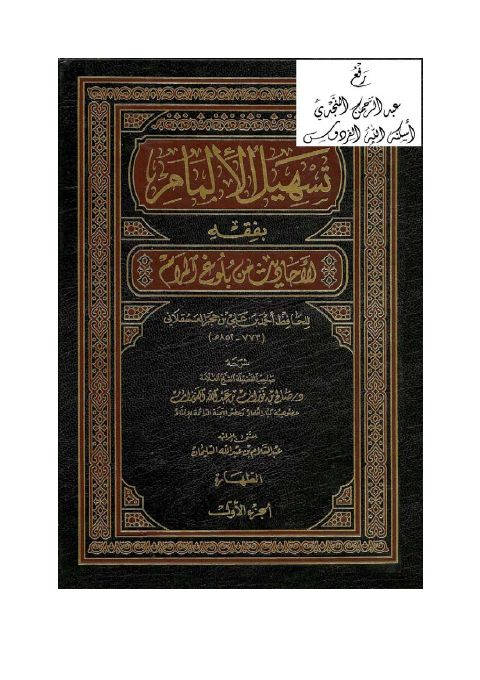

عبد السلام بن عبد الله السليمان
Author
Resources
 تسهيل الإلمام بفقه الأحاديث من بلوغ المرام
تسهيل الإلمام بفقه الأحاديث من بلوغ المرام
أحمد بن علي بن حجر العسقلاني • صالح بن فوزان الفوزان
تسهيل الإلمام بفقه الأحاديث من بلوغ المرام
تسهيل الإلمام بفقه الأحاديث من بلوغ المرام
أحمد بن علي بن حجر العسقلاني • صالح بن فوزان الفوزان

تسهيل الإلمام بفقه الأحاديث من بلوغ المرام- مدمجة تسهيل الإلمام بفقه الأحاديث من بلوغ المرام- مدمجة أحمد بن علي بن حجر العسقلاني • صالح بن فوزان الفوزان